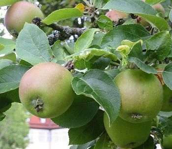
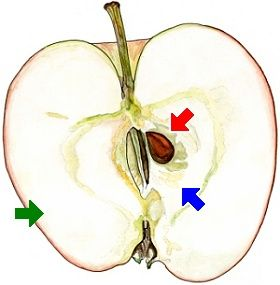

Die runden Früchte heißen Äpfel. Sie sind essbar und schmecken sehr gut.


Im Innern des Apfels ist eine Balgfrucht mit ledrigen Wänden. In jedem ihrer 5 Fächer sind 1 oder 2 rotbraune Samen.
Die Balgfrucht ist von einem saftigen, säuerlich-süßen Gewebe umschlossen.